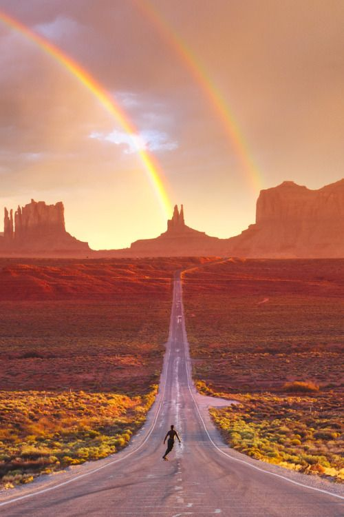

Navajo Emergence & Philosophy
The Navajo people, the Diné, passed through three different worlds before emerging into this world. The Fourth World, or Glittering World.
The Diné believe there are two classes of beings: the Earth People and the Holy People. The Holy People are believed to have the power to aid or harm the Earth People. Since Earth People of the Diné are an integral part of the universe, they must do everything they can to maintain harmony or balance on Mother Earth.It is believed that centuries ago the Holy People taught the Diné how to live the right way and to conduct their many acts of everyday life. They were taught to live in harmony with Mother Earth, Father Sky and the many other elements such as man, animals, plants, and insects.
The Holy People put four sacred mountains in four different directions, Mt. Blanca to the east, Mt. Taylor to the south, San Francisco Peak to the west, and Mt. Hesperus to the north near Durango, Colorado, thus creating Navajo land. The four directions are represented by four colors: White Shell represents the east, Turquoise the south, Yellow Abalone the west, and Jet Black the north.The number four permeates traditional Navajo philosophy. In the Navajo culture there are four directions, four seasons, the first four clans and four colors that are associated with the four sacred mountains. In most Navajo rituals there are four songs and multiples thereof, as well as many other symbolic uses of four.
Male and Female Rain
One prominent teaching in Navajo culture is the teaching of understanding and respecting rain. When the sky darkens with clouds, thunder rolls, lightning flashes, and then the rain pours down, this is known the male rain. The female rain, on the other hand, is gentle, with a soothing effect. In Navajo belief, there is a male and female to all things above below and around us. To Navajos, rain is one of the four main elements of Earth; light, air, and pollen are the others. It is said by wise ones that if you have no respect for the rain, and your thoughts and words are bad while it rains, the sacred forces will punish you. The Navajo have a ceremony that restores harmony and balance with nature.